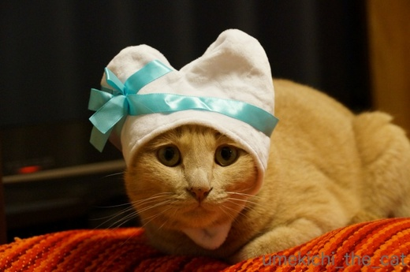
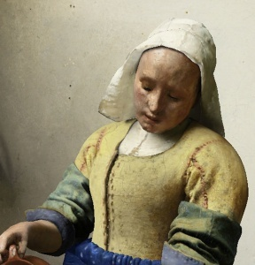
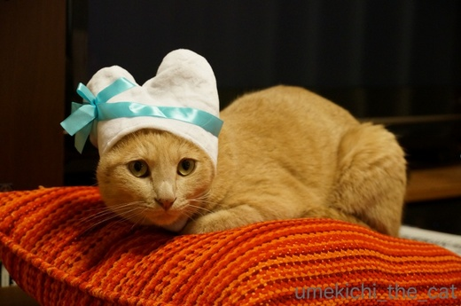
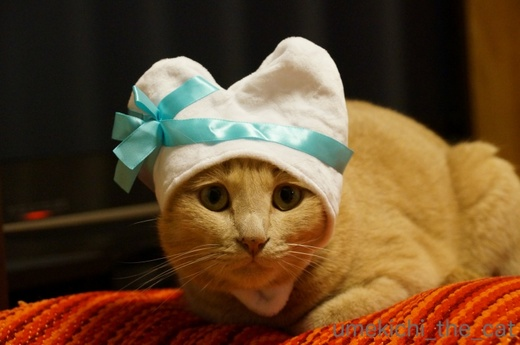
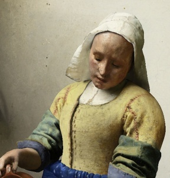
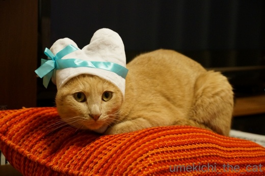

バレンタインのハート [梅吉]
14日はバレンタイン。
日頃の感謝を込めて梅吉からみなさんに心ばかりですがハートのプレゼントを・・・

と思ったのですが梅吉さん情けない顔になっちゃってます(^▽^;)
あんまりハートが入っていないような・・・・・
ハートちゃんというより中世ヨーロッパのおばちゃんみたいだしー

中世ヨーロッパのおばちゃん（フェルメールですw)
この日はとっても寒かったので被り物があったかくて心地よかったのか
無抵抗な梅吉さん。
此れ幸いと（嫌がって）お蔵入りしていたうさぎちゃんにもチャレンジ。

やっぱり情けない顔になってます。

おバカな飼い主に付き合いきれなくなったのかシカト寝し始めた梅吉さん。
おかーさんはやっぱりそのねこくまちゃんが似合うと思いますよー！

![[猫]](https://blog.ss-blog.jp/_images_e/101.gif) わし もうねるー
わし もうねるー

これが一番キリッとしたお顔でした。
わしからのはーと うけとってやー
 ↑ガブッと一押し↑
↑ガブッと一押し↑
今日は健康診断の日でした。
胃部検査のためバリウムを飲んだのですがバリウムが出ない！
バリウム検査大嫌いなので来年からは別料金のオプションになっちゃうけど
胃カメラに変更しようと今強く思ってます。
（胃カメラは喉からも鼻からも麻酔で全然平気です。）
皆さんはバリウム検査得意ですか？
もうお腹も痛くて気持ち悪くて今日は早く寝ちゃおうと思ってます。
前記事のお返事は明日ゆっくり書きますねー。
日頃の感謝を込めて梅吉からみなさんに心ばかりですがハートのプレゼントを・・・

と思ったのですが梅吉さん情けない顔になっちゃってます(^▽^;)
あんまりハートが入っていないような・・・・・
ハートちゃんというより中世ヨーロッパのおばちゃんみたいだしー

中世ヨーロッパのおばちゃん（フェルメールですw)
この日はとっても寒かったので被り物があったかくて心地よかったのか
無抵抗な梅吉さん。
此れ幸いと（嫌がって）お蔵入りしていたうさぎちゃんにもチャレンジ。

やっぱり情けない顔になってます。

おバカな飼い主に付き合いきれなくなったのかシカト寝し始めた梅吉さん。
おかーさんはやっぱりそのねこくまちゃんが似合うと思いますよー！


これが一番キリッとしたお顔でした。
今日は健康診断の日でした。
胃部検査のためバリウムを飲んだのですがバリウムが出ない！
バリウム検査大嫌いなので来年からは別料金のオプションになっちゃうけど
胃カメラに変更しようと今強く思ってます。
（胃カメラは喉からも鼻からも麻酔で全然平気です。）
皆さんはバリウム検査得意ですか？
もうお腹も痛くて気持ち悪くて今日は早く寝ちゃおうと思ってます。
前記事のお返事は明日ゆっくり書きますねー。

カフェオレ色の梅吉

梅吉 2023年8月10日 永眠


梅吉と出会った譲渡会

犬猫の理由なき殺処分ゼロ
妄想広告
UMEKICHI 光

爆発的に早い！
時々攻撃的！
Thanks to Mr.Boss365
爆発的に早い！
時々攻撃的！
Thanks to Mr.Boss365

それはツラいでしょうね(;_;)
早く良くなりますように(;_;)
by middrinn (2018-02-13 19:24)
梅吉さんからのハートを受け取りましたぁ～(#^.^#)
情けないお顔も可愛いですよ！！
バリウム検査辛いですよね！！
私も検査後が辛すぎるので
毎年胃カメラを受けております！
でも胃カメラも辛いのです(>_<)
by きぃ (2018-02-13 19:37)
バリュームの検査では炭酸の粒を飲むのが苦手です！
ゲップするなと言われても動いているとゲップして炭酸追加になります(^^)
by ma2ma2 (2018-02-13 20:06)
中世ヨーロッパのおばちゃんがおかしいです。フェルメールが出てくるとこも。梅吉さんに似合うのは猫くまさんですが、わしもうねるーのお写真がかわよいです。。
by zombiekong (2018-02-13 21:08)
フェルメールもビックリ！
まさか21世紀に日本で梅吉さんと対決することになろうとは夢にも思っていなかったでしょう(^▽^;)
ほんとにおかーさん孝行のいい子だにゃ～♪
ポリープ持ちのため毎年胃の検査は受けています。
バリウム飲むこと自体は平気なんですが、検査台の上で右向け、左向け、息止めろ、と延々やられるのは拷問です^^；
by ゆきち (2018-02-13 21:20)
お、梅吉さん被り物平気なのですね！
ウチのヤツの場合、被り物でも耳を覆ってしまうと嫌がります。^^;
バリウムは一気に飲み干す瞬間と、ゲップを我慢し続けるのがとてもつらいです。
あ。あと、鏡を見たときに口にバリウムが付いている情けない自分の顔。^^;;
by yes_hama (2018-02-13 21:33)
ハート、受け取りました。ありがとう梅吉さん(^^)
バリウムは嫌です。
ゆっくり休んでください。
全部出るといいですね。
by riverwalk (2018-02-13 23:05)
もうっ(^。^)
かわっいいったら！！！
ほんと、かわいいっ!(^^)!
by らしゅえいむ (2018-02-13 23:28)
あは、フェルメール（笑）
こんなプレゼントだったらチョコよりずっと嬉しいかも。
かぶりもの、全部お似合いですよ。
わたしも、健診ではバリウム検査は外しています。
（個人的に病院で内視鏡やってます）
スルッと出ない人は絶対これやらない方がいいです(｡-_-｡)
by Ja-Kou66 (2018-02-14 01:04)
おばちゃんの服の色が・・・（爆）
検査後にくれる下剤、飲みましたか？
お腹の中で固まると厄介ですから
少しでも出した方が良いと思いますが、
寝ちゃったんですよね＾＾；
by ぽちの輔 (2018-02-14 06:37)
中世ヨーロッパのおばちゃん！！
受けるー！超受けるー（≧∇≦）
見事な被り物大会に鳴り止まない拍手。
私はここ5年ぐらいいつも胃カメラです。
喉からいっちゃいますよー！
by よーちゃん (2018-02-14 08:23)
被ってますね〜〜^ ^
さすが、カブリ王子？！
by KENT0mg (2018-02-14 09:10)
梅吉君のハートいただきました^^
ありがとうにゃーーー♪
毛布にくるまれて、ねむねむなお顔、これ好物だわーｗｗ
バリウムが出ないのはいやですね＞＜
わたしは下剤を貰うと30分くらいで効き始めるので苦労はしないのですが
あまり好きな検査じゃ内です。。。
by リュカ (2018-02-14 15:04)
梅吉くんが嫌々ながらつき合ってくれてるという感じがとってもいい味出してますね(^o^)丿
バリウム過去に飲んだことありますが…あれは辛い(-"-)
by palpal (2018-02-14 15:06)
ハッピーバレンタイン♪
梅吉くんもバレンタインのハート猫さんだ～(≧▽≦)
情けないお顔でも被り物写真大放出！うれしいプレゼントです。
家はタラに被せたらぶんぶん頭を振り動かし、一瞬で外されてしまった。
夜、ひなで試してみよｗ
バリウムで体調が悪くなっちゃったのね。気持ちが悪いと横になっていても辛いでしょう。
早く出るといいね。
by emi (2018-02-14 16:31)
梅吉さんからのハート♪ありがとう＾＾
困ってるハート？
フェルメールは良かったですね～＾m＾；
ウサギはきっと小心なウサギちゃんなのね。
眠そうな顔、可愛いです～＾＾
バリウム、飲んだことありません‥苦手そうで＾＾；
by sana (2018-02-14 18:41)
フェルメール、爆笑しちゃいましたw
キリッとしたイケメン梅吉さんのハート、しっかり受け止めました*\(^o^)/*
バリウム、何度か飲んでますが割と平気です＾＾
かみさんはバリウムが苦手で胃カメラ検査を一度受けましたが、
「胃カメラ検査は二度とやらない！バリウムの方がマシ(ｰｰ;)」と
叫んでました(⌒-⌒; )
そしてあれから何年か・・・バリウムも胃カメラも上手に避けてます~_~;
by ニッキー (2018-02-14 18:58)
壺持った女性の絵ですね。
リボンの色合いもそれっぽい(^^;
最近はずっと麻酔下で胃カメラですが、その前はバリウム飲んでました。
下剤の効きが半端なく、
帰りの電車で駅ごとに降りてトイレに行かねばならず
それに参ってしまったのを覚えてます(-_-;)
by も〜 (2018-02-14 19:35)
おおおー梅吉君の被り物ですね！
この被り物、なーんか似てると思ったら、中世ヨーロッパのおばちゃんかー！
梅吉君、絵になってるよ！侍女と見せかけて、おばちゃんの背後でミルクを狙うの図。
バリウムより胃カメラがいいとは…。早く出てあげて~バリウムちゃん！
by BillK-ko (2018-02-14 21:29)
がしっ！
梅吉くんのハート♡、おばちゃん確かに受け取った。( ´艸｀)
ありがとー！
梅吉くん、被り物が上達してきてますね＾＾
私は胃カメラ検査を受けていますが、
バリウムはもらった下剤といっしょに、お水も沢山飲まないと
いけないんだそうですよ。
はやくスッキリするといいですね。
by マーヤ (2018-02-15 22:40)
middrinnさん＞
コメントありがとうございますm(_ _)m
下剤を飲んでも出ない・・・は本当に辛かったです(꒦ິ⌑꒦ີ)
夜遅くにようやく出たのですがトイレにいる間中
梅吉が足元でウロウロしていて落ち着かないったらありゃしないwww
きぃさん＞
情けない顔が梅吉流のサービスだったのかもー＾＾
胃カメラ、麻酔をしてもダメですか？
私は麻酔から起こされた後も「なんかありましたっけ？」っていうくらい
全然平気なのです。
来年は絶対胃カメラにします！
ma2ma2さん＞
炭酸追加されるんですね！なんて恐ろしい・・・
ゲップしなくて良かった〜(^▽^;)
zombiekongさん＞
被り物を見た瞬間から中世の洗濯おばさん・・・としか思えなくって(^▽^;)
かぶせて見たらまさにまさに！でしたー。
そう言えば中世ヨーロパの女性、寝るときもボンネット被ってませんでしたっけ？
わしもうねるーが今度はボンネットおばさんに見えてきた！
ゆきちさん＞
フェルメール先生が怒って幽霊になって出てきたら
とっ捕まえて梅吉の絵を描いてもらいたいところです(^_－)☆
バリウム検査、私は小柄なので今一つ足が突っ張りきれずに
台から落ちそうで怖いですw
yes_hamaさん＞
梅吉も耳を覆う被り物は嫌がると思っていたのですが
ねこくまちゃんの被り物でそうでもないことがわかりました。
嫌がるポイントがどこなのか今一つ掴めません(^▽^;)
バリウム検査、私と入れ違いの方が口の両端から
バリウムの白い液が垂れていて・・・
笑っちゃうよりも「辛かったんだね！がんばったね！！」と
言いそうになりましたー。
もちろんちらりと自分の口元もチェックしましたよw大丈夫でしたー。
riverwalkさん＞
バリウム検査、もう二度と受けないと心に決めました！
夜中にやっとバリウムが出たのですが
トイレにいる間中梅吉が足元でニャーニャー鳴いて
落ち着かない・・・・
お願いだからトイレくらいゆっくりさせて欲しいですw
らしゅえいむさん＞
ありがとうごさいますー＾＾
飼い主のしつこい被り物攻撃にすっかり諦めモードの梅吉です！
Ja-Kou66さん＞
梅吉プラス高級チョコ一粒、だとなおご満足いただけるかもー＾＾
バリウム、今までで一番辛い思いをしました。
来年からは絶対胃カメラです！！
ぽちの輔さん＞
フェルメールの絵のおばちゃん、被り物をした梅吉と
色のトーンがおんなじでした＾＾
バリウム、下剤を飲んでも出ない・・・で苦しんでました (^▽^;)
が、夜中に梅吉に付き添われて無事に出ましたー。
なぁなぁなぁなぁと励ましてくれましたよwww
（トイレくらいゆっくりしたい・・・）
by ちぃ (2018-02-16 09:50)
よーちゃん＞
おばちゃんでも「洗濯おばちゃん」って感じですー＾＾
タライ抱えて歩いていそうじゃないですかw
胃カメラ、実は喉からしたことありません。
鼻から麻酔が楽ですよ、と言われたので
迷わず楽な方を選びました！
KENT0mgさん＞
カブリ王子の称号、恣にしたいと思います！
リュカさん＞
甘いものはお好きじゃないと聞いたので
大きなハートをお送りましたよ＾＾
バリウム検査、前回受けた時は下剤がすぐに効いて楽になったのですが
今回はお腹が痛いだけで何時間も辛かったですー。
夜中に梅吉に付き添われてやっと出たわw
palpalさん＞
嫌々なところがいい味出しているでしょ(^_－)☆
猫のメイワクそうな顔って好きなんですw
以前ニュースでカプセル状の胃カメラを飲み込んだら
検査ができるようになるかも・・・ってやってたのですが
そういう楽そうな検査が早く実現しないかしらねー。
emiさん＞
バレンタインのチョコイベントに振り回されることは無くなっちゃたけど
梅吉で季節のイベントに参加して見ましたー＾＾
ハートの被り物ひなちゃんにはちょっと小さいかもしれないけど
上手く被れたかな？
バリウム検査、出ないと大変な事になることがありますよ、なんて
注意書きがあったので余計に焦っちゃいました。
夜中に梅吉に伴われてちゃんと出ましたー！！
（足元でわーわー言ってただけとも言うw)
sanaさん＞
梅吉は困ってますがお送りしたハートは安心安全です＾＾
フェルメール先生も梅吉の中世のおばちゃんっぷりには
ご満足いただけてるかと思いますw
もしも胃の検査をされるなら麻酔下での鼻からをお勧めしますよー！
ニッキーさん＞
ハート、受け止めていただけたのですね＾＾ありがとうございます♡
ゴッドマザー様は胃の検査が苦手なご様子・・・
カプセルを飲み込んだら画像が送られてきて検査完了！
なんてものが開発中というニュースを見たことがあるのですが・・・
まさにゴッドマザー様向きの検査ですよね！
早く実用化されると良いなぁと私も思ってます。
も〜さん＞
白いボンネットもそうなのですが色合いが梅吉っぽいなーと
私も感じてました＾＾
フェルメール先生に被り物をした梅吉の絵を描いでいただきたかったw
下剤、大変でしたね(^▽^;)
各駅構内にトイレがあって良かった！
BillK-koさん＞
この色合いの被りものだと中世のおばちゃんです（きっぱり）
そうそうこのおばちゃん（完全におばちゃん呼ばわり）牛乳を注いでるんですよね！
最近ニャンコ牛乳好きの梅吉にはぴったりの絵でした＾＾
バリウムは夜中に梅吉につきさわれて無事排出できましたw
マーヤさん＞
スーパーキャッチありがとうございますーす！
ゴールデングローブ賞を差し上げます＾＾
バリウム後、速攻で下剤を飲んでお水をゴクゴク・・・
出ないので夜にはビールをグビグビ・・・
それでもなかなか出ませんでした（涙）
今思うとビールは水分じゃないから！でしたよ(^▽^;)
バリウムは夜中に梅吉に付き添ってもらってちゃんと出ましたー。
辛かったわ・・・
by ちぃ (2018-02-16 11:30)
梅吉さん、あつらえたようにピッタリの被り物です。
良く似合ってますよ。
by kiki (2018-02-19 22:16)
kikiさん＞
梅吉被り物開眼！かもしれません。
眠くて大人しくしてくれたのも良かったです＾＾
by ちぃ (2018-02-20 16:17)